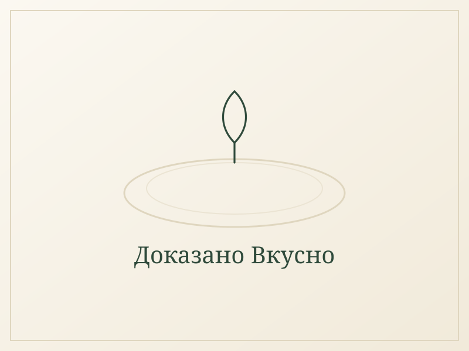

Чили кон карне с червен боб и печени чушки
Гъсто чили с добре запечена кайма, червен боб и печени чушки, които влизат накрая и остават сладки. Поднася се по два начина — с ориз или в хрупкава питка с разтопен кашкавал, а лютото е по избор.

Съставки
- 500 г кайма (говежда или смес)
- 1 глава лук
- 2-3 скилидки чесън
- 2 печени чушки, нарязани
- 3-4 узрели домата (или 400 г консерва)
- 1-2 с.л. доматена паста
- 1-2 консерви червен боб
- 1 ч.л. куркума
- 1-2 ч.л. черен пипер
- 1-2 ч.л. кимион
- 1-2 с.л. пушен червен пипер
- 2 ч.л. сол
- лют пипер на прах или люта чушка — по желание
- кориандър или магданоз, нарязан
- зехтин за пържене
- за сервиране
- 4 питки или тортили (за сервиране в питка)
- настърган кашкавал
- 250 г ориз (за сервиране с ориз)
- лайм, гуакамоле, заквасена сметана — по желание
Начин на приготвяне
- Загрейте малко зехтин в голям дълбок тиган на средно висок огън. Задушете ситно нарязания лук 3–4 минути, после добавете чесъна и бъркайте още минута.
- Избутайте лука към края на тигана, сложете каймата в средата на един пласт и я притиснете с шпатула. Не я бъркайте 4–5 минути, за да хване тъмна коричка, после я обърнете на парчета и запечете и другата страна.
- Начупете каймата на дребно и я смесете с лука. Добавете куркумата, кимиона, пушения червен пипер, черния пипер и солта и разбъркайте за 30 секунди, докато ухаят.
- Сипете доматите, доматената паста и отцедения червен боб. Щом заври, намалете огъня и оставете да къкри под открехнат капак 15–20 минути, докато сосът се сгъсти и бобът поеме вкуса.
- Добавете печените чушки последни и гответе още 5 минути — така запазват формата и сладостта си.
- Опитайте и доовкусете: щипка мед или захар, ако доматите са кисели, и лют пипер, ако искате по-люто.
- Изключете котлона и поръсете с нарязания кориандър или магданоз. Поднесете по един от двата начина в „Предложение за сервиране“.
Предложение за сервиране
С ориз: сварете ориза и го сложете в дълбока чиния като гнездо. В средата сипете 2–3 черпака чили, поръсете с пресен магданоз и сложете отстрани резен лайм.
В питка с кашкавал: затоплете питка в сух тиган, поръсете половината с кашкавал, сложете отгоре 2–3 с.л. чили и още малко кашкавал и сгънете на две. Запечете по 1–2 минути от всяка страна, докато стане хрупкава и кашкавалът се разтече. Нарежете на триъгълници и поднесете с гуакамоле.
Защо тази рецепта си заслужава
Защо е полезна
Червеното месо е богат източник на желязо, витамин B12 и цинк, а червеният боб добавя растителен протеин и фибри, които забавят усвояването на въглехидратите. Куркумата е позната с противовъзпалителните си свойства, а доматите носят ликопен, антиоксидант, който се усвоява по-добре след топлинна обработка.
Кога е най-подходящо да се яде
Засищащо ястие, подходящо за обяд или вечеря, особено след активен ден. Комбинацията от протеин, фибри и въглехидрати от ориза или питката осигурява дълготрайна енергия и предпазва от бърз глад няколко часа по-късно.
Какво дава на тялото
Едно хранене осигурява около 34 г протеин, желязо за нормалното образуване на кръвни клетки и фибри от боба, които подпомагат храносмилането. Изборът да добавите лютото по желание позволява храненето да се нагоди към конкретния ден и апетит.
Защо домашно приготвеното е по-полезно от фастфууда
За разлика от готовите кесадии от заведенията за бързо хранене, тук контролираш количеството кашкавал, зехтин и сол, а подправките са пресни, не от готова смес с добавени овкусители. Печените чушки заменят люто-острите добавки без да жертват вкуса.
Още рецепти в същия дух

Протеинови палачинки със скир
Пухкави американски палачинки от яйца, скир и овесено брашно, със скир, боровинки и мед отгоре.
Киноа за закуска
Сварена киноа с гръцко кисело мляко, горски плодове, орехи и мед — като каша, но с повече протеин.
Яйчени мъфини с извара и спанак
6 печени мъфина от яйца, извара, спанак и сирене — по 3 на порция и 25 г протеин.